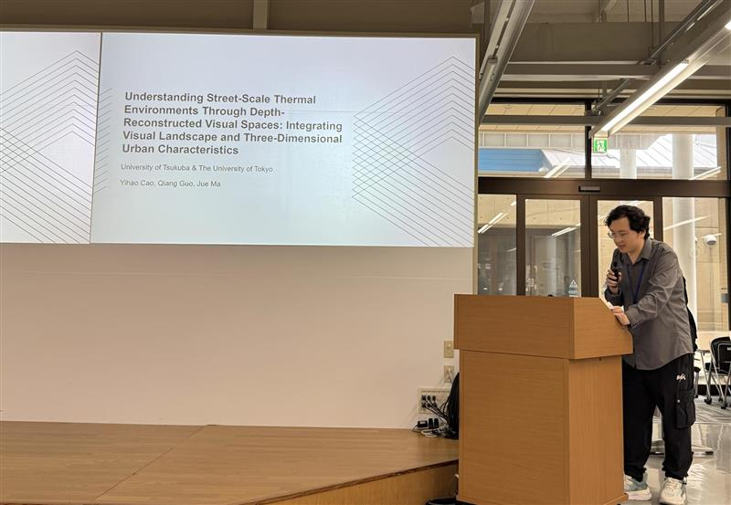
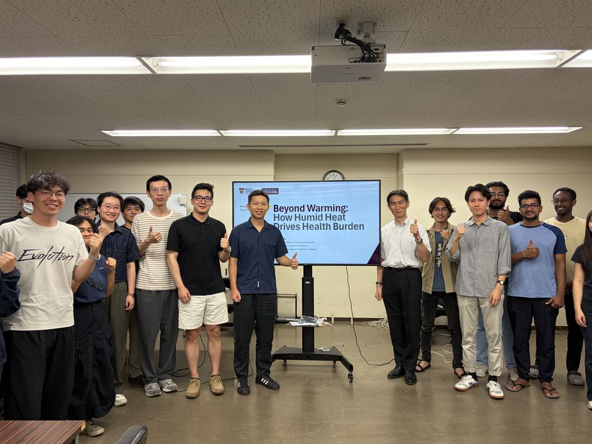

Yihao Cao Presented in Urban Heat Island Conference
29 August, 2026
University of Tsukuba

C2S visiting student Yihao Cao gave a presentation entitled “Understanding Street-Scale Thermal Environments Through Depth-Reconstructed Visual Spaces: Integrating Visual Landscape and Three-Dimensional Urban Characteristics” at the Heat Island Conference 2026, held in Kanazawa, Japan. Congratulations to Yihao on his excellent work!

We were delighted to welcome Prof. Tao Huang from Nanyang Technological University (NTU) to C2S. He delivered an excellent seminar on climate change and human health, followed by engaging discussions with faculty and students.